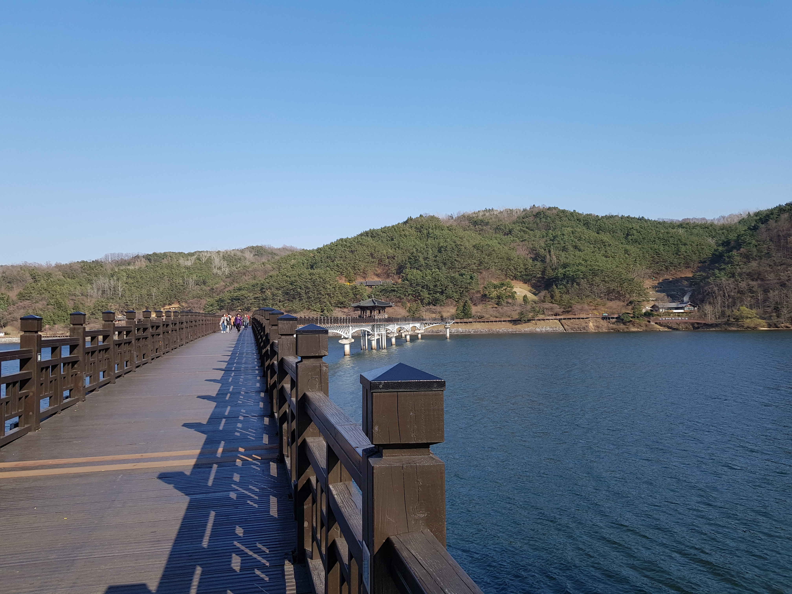

식사 다음의 안동을
설계합니다.
원도심의 식사에서 월영교의 저녁으로,
그리고 고택의 하룻밤으로.
관광 데이터를 실행 가능한 동선과 혜택으로 연결하는
안동 릴레이 운영 제안입니다.

.jpg){kind=link}
음식점은 모여 있고,
다음 목적지는 떨어져 있습니다.
안동의 음식업종 3,254곳을 지도에 올렸습니다. 원도심에서 식사한 뒤 어디로 이동할 수 있는지, 체험·야간·숙박을 어떤 권역으로 연결할지 검토하는 화면입니다. 레이어와 범위 버튼을 직접 눌러볼 수 있습니다.
① 식사 인증을 시작할 상권 ② 저녁 콘텐츠까지 연결할 이동 구간 ③ 영업·입실 시간 확인이 필요한 시설. 관광객 이동 궤적이나 정책효과를 그린 지도는 아닙니다.
방문 다음의 행동을 연결하는 안동 릴레이
팀의 「아이디어 흐름 및 데이터」에서 출발한 프로젝트입니다. 관광객을 더 불러오는 홍보보다, 이미 안동에 온 사람이 식사 이후 체험·야간관광·숙박으로 이어지도록 운영 조건을 설계합니다.
사람이 오는 것과 오래 머무는 것은 다릅니다
원안은 안동의 방문 증가, 숙박객 체류시간 감소, 방문 규모 대비 카드소비 둔화에 주목했습니다. 관광 유입을 지역의 다양한 활동과 소비로 연결할 필요가 있다는 문제의식입니다.
다만 집계자료만으로 같은 사람이 식사 후 떠났는지, 그 이유가 교통인지 가격인지까지 알 수는 없습니다. 관측한 현상에서 출발해 현장에서 연결 장애물을 확인하는 방식으로 진행합니다.
쿠폰을 여행의 순서에 맞춰 연결합니다
식사 영수증 인증 → 체험 혜택 → 저녁 콘텐츠와 이동 → 고택 숙박 혜택. 기존 관광주민증을 활용하는 방향으로 설계하되, 실제 기능 추가와 기관 연동은 협의가 필요한 상태입니다.
할인액만 정하는 사업이 아닙니다. 대상 관광객·시간대·이동수단·참여 업체·공급량·측정 방법을 함께 담은 실행 사양을 만듭니다.
원안에서 실행안으로 구체화하는 세 단계
| 단계 | 관광객 경험 | 운영자가 정할 조건 | 데이터의 역할 |
|---|---|---|---|
| 식사 → 체험 | 찜닭·갈비 등 식사 후 영수증을 인증하고 체험 쿠폰을 받음 | 식사비 문턱, 할인폭, 예약·마지막 접수 시간, 인증 방식 | 식음 소비 규모·일행별 결제액·체험 선호·업체 수용성으로 조건 조정 |
| 체험 → 야간 | 월영교 등 저녁 코스와 이동 방법을 안내받음 | 운영일·시간대, 교통수단·요금·대기시간, 귀가편과의 연결 | 시간대별 방문·역 승차·실제 동선 측정으로 실행 가능한 코스 선정 |
| 야간 → 숙박 | 참여 조건 충족 후 고택·한옥 숙박 혜택을 확인 | 할인 단위·금액, 잔여 객실·입실 마감, 기존 숙박객 적용 여부 | 기존 숙박 계획·가격별 의향·숙소 공급을 결합해 적용 범위 설정 |
4만 원 문턱·10% 체험 할인·2만 원 숙박 할인은 현재 가안입니다. 관광택시 유휴 연계, 숙소 제휴, 야간 행사의 해당 날짜 운영은 아직 확약되지 않았습니다.
현재 위치: 데이터 진단을 바탕으로 현장 검증을 준비하고 있습니다
이번에 만드는 것: 검증 가능한 근거가 붙은 실행 운영안과 분석·측정 도구입니다. 아직 없는 것: 실제 사업 시행에 따른 추가 숙박·소비 증가 성과입니다. 아래 기존 계산값은 현재 브리프의 분석 결과이며, 이번 설명 페이지 개정에서 원자료를 재계산하지는 않았습니다.
전체 흐름
기존 관광주민증과의 연계를 지향합니다. 기관 협의와 기능 검토를 거쳐 어느 가게·체험·숙소를 어떤 순서와 조건으로 묶을지를 설계합니다.
우리가 조사한 데이터와 나온 결과
여덟 개의 발견입니다. 각각 어떤 데이터로 무엇을 계산해 무엇이 나왔는지, 그리고 그 데이터로 말할 수 없는 것까지 같은 형식으로 적었습니다.
| # | 무엇을 봤나 | 쓴 데이터 | 결과 | 근거 |
|---|---|---|---|---|
| F1 | 숙박객이 얼마나 머무나 | 이동통신 BDT_01_01_006_1 · LN_02_01_0132019 vs 2025 | −6.2% | 산출값 |
| F2 | 방문 1회당 얼마를 쓰나 | 이동통신 + 신용카드 BDT_02_01_003_352024 vs 2026 각 1~8월 | −2.8% | 산출값 |
| F3 | 그 돈이 어느 업종으로 가나 | 신용카드 중분류 BDT_02_01_003_352026.1~8 | 체험 1.1% | 산출값 |
| F4 | 안동만 그런가 — 전국 비교 | 위 두 자료를 전국 시군으로 확장242개 시군 | 105곳 동일 | 산출값 |
| F5 | 체험·야간·숙박 중 어디가 끊겼나 | 업종 대분류 LN_03_01_045 + 이동통신 시간대같은 유형 6곳 비교 | 체험 −6.2%p | 산출값 |
| F6 | 누가 언제 오나 | 이동통신 교차표 · 문체부 축제 · 고택 리스트2023~2025 | 10월 174만 | 산출값 |
| F7 | 몇 시에 떠나나 | 코레일 안동역 승하차41,616행 · 2024.01~2026.08 | 주말 19~20시 | 산출값 |
| F8 | 기존 정책은 쓰이고 있나 | 주민증 발급·이용 건수2026.7.5 | 6.7% | 보도값 |
데이터 전체 목록
코드가 있는 항목은 데이터랩·공공데이터포털에서 같은 코드로 재수집할 수 있습니다.
| # | 데이터 | 출처 · 코드 · 기간 | 용도 | 상태 |
|---|---|---|---|---|
| A. 한국관광 데이터랩 | ||||
| D1 | 외지인 방문 연인원성·연령·요일·시간대 교차 | 이동통신 BDT_01_01_006 전국 시군 · 월 · 2018.01~2026.08 · 3,530만 행 | 방문당 소비 분모 · 타깃층 · 유입 집중시기 · 전환 매트릭스 가로축 | 보유 |
| D2 | 외지인 관광소비업종 중분류별 | 신용카드 BDT_02_01_003_35 touDivCd=1 · 전국 시군 · 월 | 방문당 소비 · 업종 구성 · 매트릭스 세로축 · 체험 1.1% | 보유 |
| D3 | 숙박방문자 비율 · 평균 숙박일수 | LN_02_01_013 2018~2026 | 숙박 13.5% · 3.07일 · 당일 86.4% · 축제 달 숙박 | 보유 |
| D4 | 숙박일수별 관광객 · 체류시간 | BDT_01_01_006_1 | 체류시간 −6.2% · 구성효과 점검 | 보유 |
| D5 | 업종별 소비 비중 | LN_03_01_045 | K-means 군집 변수 | 정의 확인 |
| D6 | 유입지(출발 시도) 비중 | LN_03_01_053 | 축제 수도권 비중 20.8% → 29.4% | 보유 |
| D7 | 읍면동별 외지인 방문 | BDT_01_01_005_1 안동 읍면동 · 월 | 풍산읍 착시 규명 · 권역 우선순위 · 가게 리포트 | 보유 |
| D8 | 월별 결제금액 · 건수 | LN_11_01_010 | 1단계 인증 문턱 금액 | 단위 확인 |
| D9 | 관광지 검색 순위 Top100 | LN_03_01_037 | 체험 검색 16.5% · 고택 37.8%→17.1% · 안동역 +23.8% · 월영교 −26.9% | 보유 |
| D10 | 문화관광축제 전수 지표56개 축제 | FE_01_01_003 · 005 · 007 | 탈춤의 전국 위치 · 발표÷데이터랩 배율 · 외지인 비율 | 보유 |
| D11 | 야간 방문·소비 | 데이터랩 야간 지표 | 경북 야간 방문 1위 안동 옥동, 야간 소비 상위10엔 태화동만 | 보유 |
| B. 외부 공개 · 기관 데이터 | ||||
| E1 | 안동역 승하차이음·새마을·무궁화 시간대별 | 한국철도공사 2024.01~2026.08 · 41,616행 | 저녁 이탈 시각 | 신규 |
| E2 | 안동 고택 리스트 | 미래문화재단 · 559건 | 숙박 가능 71곳 = 3단계 공급 | 정제 |
| E3 | 경북 관광숙박업 현황 | 공공데이터포털 15129082 | 한옥체험업 188곳·637실 = 경북 전체 참고값 | 보유 |
| E4 | 소상공인 상가(상권)정보 | 소상공인시장진흥공단 2026.06.30 | 안동 음식업종 3,254곳 = 가맹 분모 · P3 대상 | 정제 |
| E5 | 일반음식점 인허가 | 식품안전나라 · 7,948건 | 영업 중 2,652곳 좌표 변환, 원도심 분포 | 정제 |
| E6 | 안동 반값여행 공고문 | 안동시 공고 제2026-2170호 | 차별점 비교표 | 보유 |
| E7 | 주민증 발급·이용 건수 | 언론 보도 · 기관 발표 | 안동 6.7% · 편중 58.6% · 평창 10% | 원자료 없음 |
| E8 | 충주·영천·나주 환급 실적 | 각 시 보도자료 | 유사 정책 반응 범위(계산기 가정값) | 보도값 |
| E9 | 시내버스 개편 · 대중교통 만족도 | 안동시 · 만족도 조사 | 저녁 이동 공백 · 환승 항목 최하위권 | 보유 |
| E10 | 문체부 지역축제 개최계획 | 문화체육관광부 2024 · 2025 | 안동 축제 5종 · 시기 · 예산 | 보유 |
| C. 정보공개청구 — 결과에 의존하지 않음 | ||||
| R1 | 주민증 지점별 이용 건수 | 한국관광공사 | E7의 원자료 | 청구 |
| R2 | 충주 환급 업종별 사용 내역 | 충주시 | 차등 환급의 업종 흐름 | 청구 |
| R3 | 탈박물관 체험 인원 | 안동시 · 재단 | 체험 수요 공개 통계 부재 | 청구 |
| D. 직접 만드는 데이터 — 9/19~20 | ||||
| P1 | 할인액 무작위 정책선호 실험 | 직접 설문 · 목표 150명 · 4조건 | 3단계 할인액 결정 | 설계 중 |
| P2 | 안내카드 QR 퍼널 | 원도심 가게 2곳 × 2일 | 1→2단계 연결 | 섭외 |
| P3 | 사업자 수용성 | 원도심 음식점 15곳 | 참여 조건 · 거부 이유 | 설계 중 |
| P4 | 모의 릴레이 | 팀·지인 동선 주파 | 저녁 이동 · 21시 영업 가게 수 | 설계 중 |
문제 — 무엇이 이상한가
숙박객 평균 체류시간
2019 → 2025. 전국 중앙값 +3.0%. 261개 시군 중 감소폭 51번째 산출값
숙박방문자 비율
전국 상위 17%. 비율과 절대 규모를 구별 산출값
평균 숙박일수
전국 하위 14%. 1박 숙박자가 66% 산출값
세 숫자를 함께 읽으면 진단이 달라집니다. 숙박방문자 비율은 상위 17%인데 평균 숙박일수는 하위 14%입니다. 1박 방문이 큰 비중을 차지하므로 숙박 여부와 체류 길이를 분리해 봅니다. 처방도 달라집니다. 숙박객을 더 데려오는 대신 머무는 동안의 동선을 채웁니다.
방문은 늘고 방문당 소비는 줄었습니다
중앙선 전 구간 개통(2024.12, 부산 직결) 전후로 2024년과 2026년 각 1~8월을 비교했습니다. 외지인 방문 1,110만 → 1,173만 회, 관광소비 1,729억 → 1,775억 원, 방문당 15,572원 → 15,134원.
산출값 방문 = 데이터랩 이동통신 외지인 연인원 · 소비 = 데이터랩 신용카드 외지인 관광소비(touDivCd=1). "방문당 소비"는 1인당이 아닙니다. 분모의 중복 집계 규칙과 두 자료의 모집단 정합성을 확인해야 합니다. 실제 개인·여행별 지출액은 아닙니다.
업종별 소비 구성에서 연결 가설을 세웁니다
산출값 2026년 1~8월 안동 외지인 카드 관광소비의 업종 구성(신용카드 BDT_02_01_003_35). 식음·쇼핑·교통이 92.1%를 차지합니다. 체험·문화·레저는 1.1%, 숙박은 2.5%에 그칩니다. 문화서비스 단일 업종은 0.2%, 관광유원시설은 0.0%입니다. 집계상 소비 집중을 보여줍니다. 같은 사람이 식사·쇼핑 후 떠났다는 동선은 확인하지 못합니다.
운영 가설 — 식사 이후의 선택을 연결합니다
저녁 이동이 다음 활동의 제약일 수 있습니다
자가용을 이용할 수 없는 관광객에게 원도심과 체험·월영교·고택 사이의 이동이 제약이 될 수 있습니다. 현지 이동수단, 실제 배차와 이동시간, 귀가 이유를 P1·P4에서 확인합니다.
원안은 이 가설을 스쳐가는 미식(Transit F&B)으로 표현했습니다. 업종별 소비 비중은 출발 근거이며 교통 단절의 결과라고 확정하지 않습니다.
대중교통 만족도 조사에서도 환승 노선·환승 요금·환승 정보 항목이 최하위권입니다 산출값
가격 혜택에 동선과 이동을 함께 붙입니다
가격·일정·귀가편·교통·콘텐츠 중 어떤 제약이 큰지 구분합니다. 할인만 제시하는 안과 함께 실행 가능한 다음 활동을 안내하는 구조를 설계합니다.
원도심 식음 → 19~21시 야간 콘텐츠 → 고택 체류로 이어지는 동선을 만들고 각 칸 사이에 이동 수단과 혜택을 붙여 다음 칸으로 넘어가게 잠그는(Lock-in) 설계가 필요합니다.
단계 간 이동·접수·입실 조건이 맞아야 하루 코스가 성립합니다. 순차 조건이 오히려 참여 부담을 높이는지도 현장에서 확인합니다.
왜 안동인가 — 전국 242개 시군 전환 매트릭스
안동만 특별히 나쁜지 확인하려고 전국을 같은 방식으로 계산했습니다. 가로는 방문 증가율, 세로는 방문당 소비 증감률입니다.
산출값 2024년 대비 2026년 각 1~8월. 외지인 방문 100만 회 이상 242개 시군. 진한 점은 비교 도시, 중간 점은 같은 유형(K-means) 도시입니다.
안동은 특이한 사례가 아닙니다
| 사분면 | 시군 수 | 비중 |
|---|---|---|
| 방문↑ 소비↑ | 109 | 45.0% |
| 방문↑ 소비↓ 안동 포함 | 105 | 43.4% |
| 방문↓ 소비↑ | 17 | 7.0% |
| 방문↓ 소비↓ | 11 | 4.5% |
전국 중앙값은 방문 +5.4%, 방문당 소비 +0.3%입니다. "방문은 늘고 방문당 소비는 주는" 곳이 105개로 전국의 43%입니다. 안동의 소비 증감률은 242곳 중 하위 28% 수준으로, 극단값이 아닙니다.
같은 유형 도시 중 문경(−2.2%), 충주(−3.9%), 강화(−0.6%)도 마이너스입니다. "안동만 소비가 떨어졌다"는 문장은 쓸 수 없습니다.
안동을 좁히는 것은 두 번째 축입니다
방문↑소비↓ 105곳 중에서 숙박객 체류시간까지 줄어든 곳으로 좁히면 범위가 달라집니다. 안동의 체류시간 −6.2%는 261개 시군 중 51번째로 큰 감소폭이고, 전국 중앙값은 +3.0%입니다.
여기에 세 번째 조건이 붙습니다. 숙박방문자 비율 13.5%(상위 17%)로 사람은 이미 오는데 평균 숙박일수는 3.07일(하위 14%)에 머뭅니다.
유입은 충분하고 체류가 짧아지고 방문당 소비가 준다. 이 세 조건이 겹치는 자리가 안동이고 릴레이가 겨냥하는 지점입니다.
지표를 어떻게 계산했나
대부분의 수치는 원자료를 그대로 쓴 것이 아니라 두 자료를 나누거나 묶어 만든 값입니다.
방문당 관광소비
외지인 카드 관광소비(원) ÷ 외지인 방문 연인원(회)
하위 진단점수 — 어느 구간이 끊겼나
종합 점수 하나로 순위를 매기면 어디를 고칠지 보이지 않아 셋으로 나눴습니다.
| 하위 점수 | 정의 · 출처 | 안동 | 같은 유형 상위 25% | 격차 |
|---|---|---|---|---|
| ① 체험 연결 | 레저스포츠 + 문화관광 + 역사관광 + 자연관광 + 체험관광업종 대분류 소비 비중 · LN_03_01_045 · 전 기간 합산 | 27.9% | 34.1% | −6.2%p |
| ② 야간 연결 | 21~24시 외지인 방문 비중이동통신 BDT_01_01_006 · 2025년 | 8.91% | 8.68% | +0.23%p |
| ③ 숙박 전환 | 숙박 소비 비중업종 대분류 · LN_03_01_045 · 전 기간 합산 | 9.9% | 14.3% | −4.4%p |
같은 유형 = K-means 군집에서 안동과 같은 칸에 들어간 공주·부여·문경·남원·충주·강화. 상위 25%는 이 6곳의 75번째 백분위입니다. ②는 이번에 새로 산출했습니다.
체험 1.1%와 27.9% — 두 지표의 기준이 다릅니다
두 자료는 기간과 분류 범위가 다릅니다. 코드북과 집계 대상의 대응을 확인하기 전에는 직접 비교하지 않습니다.
| 구분 | 업종 대분류 LN_03_01_045 | 업종 중분류 BDT_02_01_003_35 |
|---|---|---|
| 기간 | 전 기간 합산 | 2026년 1~8월 |
| 체험에 포함 | 레저스포츠 · 문화관광 · 역사관광 · 자연관광 · 체험관광 | 관광유원시설 · 문화서비스 · 기타레저 · 여행업 |
| 체험 값 | 27.9% | 1.11% |
| 숙박 값 | 9.9% | 2.49% |
대분류는 역사·자연관광 등을 묶고, 중분류는 문화서비스·기타레저 등을 묶었습니다. 실제 업체의 업종 코드와 분류 대응표를 확인해 포함 범위를 명시합니다.
릴레이 1단계는 체험 프로그램 이용을 제안합니다. 현재 분류 차이만으로 ‘보는 관광’과 ‘직접 하는 체험’을 나누거나 실제 참여 규모를 확정하지 않습니다.
숙박방문자 비율은 이미 높습니다
숙박 소비 비중은 −4.4%p로 낮지만, 숙박 방문자 비율 13.5%는 같은 유형 상위 25%(12.3%)보다 높습니다. ③의 처방이 "더 재우자"가 아니라 "머무는 동안 쓸 곳을 만들자"가 되는 근거입니다.
이 표에 남은 확인 과제
- ①③은 전 기간 합산이고 ②는 2025년입니다. 기간이 섞여 있어 제출 전 하나로 맞춥니다.
- K-means 실루엣 계수가 0.24로 군집 경계가 뚜렷하지 않습니다. 군집 수를 바꿔 안동의 이웃이 흔들리는지 확인하고, 종합 지수 순위는 내세우지 않습니다.
- ②는 안동이 오히려 +0.23%p 높습니다. "야간이 약하다"는 동급 비교로는 성립하지 않고, 근거는 야간 방문과 소비의 공간적 차이(경북 야간 방문 1위 동네가 안동 옥동인데 야간 소비 상위10에는 태화동만)와 19~20시 이탈 쪽입니다.
안동역 시간대별 1일 평균 승차
해당 시간대 승차 합계 ÷ 0이 아닌 관측 칸 수 · 잠정 계산
원자료에는 0인 칸이 많습니다. 그 0이 "승객 없음"인지 "열차 없음"인지 구분되지 않습니다. 단순 평균은 열차가 드문 시간대를 자동으로 낮게 만듭니다. 0이 아닌 칸만 분모로 삼았습니다. 19~20시 양수 관측은 평일 480칸 중 161칸, 주말 192칸 중 134칸입니다. 이 기준에서 주말 273명 대 평일 93명의 차이가 남습니다.
남는 한계 — 0 제외가 실제 운행일을 뜻하지 않으며 평균을 높이는 선택이 될 수 있습니다. 좌석 공급 차이도 남습니다. 편성 정보를 얻으면 공급량을 통제해 재계산합니다.
예산·공급 시나리오
기존 초안의 ‘방문 연인원 × 여러 비율 × 의향–행동 보정률’은 실제 순증 숙박 예측에 사용하지 않습니다. 의향–행동 보정률 30~70%에는 실증 근거가 없고, 방문 연인원과 시범사업 대상 일행의 단위도 다릅니다.
대신 사업 기간의 적격 안내 대상, 직전 단계 기준 참여·사용 비율, 할인액, 실제 공급 상한을 분리해 사용 건수와 필요 예산의 가정별 시나리오를 구성합니다. 모든 입력의 단위·분모·근거를 표시합니다.
안동 방문객은 누구이고 언제 오는가
타깃층·유입 시기·축제·고택·이탈 시각을 실측값으로 정리했습니다.
| 항목 | 값 | 출처 |
|---|---|---|
| 타깃층월·성·연령 | 50대 21.7% · 60대 17.0% · 20대 16.3% · 40대 15.9% · 30대 14.2% · 70대↑ 7.5% · 10대 6.2% 남 57.0% / 여 43.0% · 토 19.3% · 일 17.6% · 금 14.0% 50~60대가 38.7%로 주축이나 20대가 단독 3위입니다. 고택·전통(중장년)과 야간 콘텐츠(청년)가 서로 다른 층을 겨냥하므로 단계별로 타깃이 갈립니다. |
이동통신 BDT_01_01_0062023~2025 |
| 유입 집중시기 | 10월 174.0만 · 9월 171.0만 · 8월 154.1만 회. 최저 2월 123.7만. 최고/최저 1.41배 9~10월 축제 시즌 집중. 이 시기 시범 운영은 표본이 쉽게 모이지만 겨울 작동 여부는 확인할 수 없습니다. |
같은 자료 |
| 축제 | 안동 축제 5개 — 국제탈춤페스티벌(9월·10일·발표 148.8만) · 차전장군노국공주(5월·6일·25만) · 벚꽃(3월·5일·20만) · 수페스타(7월·10일·15만) · 암산얼음축제(1월·9일) 탈춤이 압도적입니다. 겨울 축제인 암산얼음축제는 방문객 집계가 없습니다. |
문체부 지역축제 개최계획 데이터랩 축제 지표 |
| 21시 이후 영업 업종 |
데이터가 없습니다. 소상공인 상가정보와 식품 인허가 자료 모두 영업시간 항목이 없습니다. 대안 — ① 소상공인 상권분석의 시간대별 매출로 간접 추정 ② P4에서 원도심을 걸으며 21시에 열려 있는 가게를 직접 셈. 초안의 "21시 상권 마감"은 현재 근거가 없습니다. |
— |
| 당일치기 비율 이탈 시각 |
무박 비중 86.4%, 개통 전 86.3%와 동일. 이탈은 주말 19~20시, 0 제외 평균 273명으로 평일 93명의 2.9배 상세는 역 승하차 분석. |
데이터랩 LN_02_01_013 코레일 승하차 |
| 고택 | 고택 559곳 중 숙박 가능 71곳. 경북 한옥체험업 188곳·637실 3단계 공급 후보 목록입니다. 날짜별 참여·잔여 객실 확인이 필요합니다. 다만 고택·한옥 검색 비중은 37.8% → 17.1%로 떨어졌습니다. "고택 수요가 강하다"는 전제로 쓸 수 없습니다. |
미래문화재단 고택리스트 공공데이터포털 15129082 |
월별 외지인 방문 연인원, 2023~2025 같은 달 평균 (만 회) 산출값
탈춤축제를 전국 56개 축제와 나란히 놓으면
| 연도 | 외지인 방문 | 전체(데이터랩) | 외지인 방문당 소비 | 비고 |
|---|---|---|---|---|
| 2019 | 144,493 | 425,417 | 10,661원 | 코로나 직전 |
| 2024 | 181,964 | 504,573 | 9,246원 | 중앙선 개통 직전 |
| 2025 | 201,523 | 554,494 | 9,368원 | 일평균 55,449명 |
| 2019→2025 | +39.5% | +30.3% | −12.1% | 사람은 늘고 소비는 줄었습니다 |
전국 축제 속 위치
- 일평균 55,449명 = 56개 중 11위 (중앙값 32,391). 붐비는 축제가 맞습니다
- 외지인 비율 36.3%, 중앙값 53.5%에 크게 못 미칩니다. 지역민 축제 성격이 강합니다
- 축제 기간 관광소비 지수는 38위. 사람 순위(11위)와 소비 순위가 크게 벌어집니다
- 축제 기간 소비 구성 식음료 60.6% · 숙박 1.0%
- 축제 방문자 수도권 비중 20.8%(2024) → 29.4%(2025). 접근성 변화와의 관련성을 추가 검토할 관찰 결과입니다
모두 산출값. "식음료 60.6%"는 축제 기간 한정 수치이므로 연중 수치로 쓰지 않습니다.
확인 후 바로잡은 두 가지
1. 탈춤 외지인 방문당 소비 9,368원은 전국 축제 중 24위로 중앙값 수준입니다. "다른 축제보다 낮다"는 표현은 쓸 수 없습니다. −12.1%는 안동 자신의 2019년 대비 변화입니다.
2. "방문객 160만"은 쓰지 않습니다. 발표값 148.8만과 데이터랩 55.4만은 집계 방식이 다릅니다. 기존 배율·순위는 발표값의 연도와 기준을 재확인하기 전까지 제외합니다. 비교에는 데이터랩 기준을 사용하고 발표값은 출처·연도·대상을 따로 표시합니다.
안동역 시간대별 승하차
열차 종류별·시간대별 자료를 받아 41,616행 표로 정리했습니다(2024.01.01~2026.08.31, KTX-이음·새마을·무궁화).
주말 평일 — 안동역에서 열차를 타는(= 떠나는) 인원 산출값
읽히는 것
- 낮 시간대(14~15시, 17~18시)는 평일·주말이 비슷하게 높습니다. 당일 관광객과 통근·업무 수요가 섞여 있습니다.
- 19~20시에서 두 선이 갈라집니다. 평일 93명, 주말 273명 — 2.9배.
- 통근·관광·지역민 이동과 운행 공급의 차이가 섞여 있어 방문 목적별 수요로 분해할 수 없습니다.
- 21~22시(막차대)는 주말 219명 · 평일 146명으로 격차가 줄어듭니다.
2단계 야간 콘텐츠 시간대를 19:00~21:00으로 잡은 근거입니다.
이 숫자가 말하지 않는 것
원자료의 0은 "이용객 없음"과 "열차 없음"을 구분하지 못합니다. 0이 아닌 관측만 분모로 삼았으나 실제 운행 여부를 확인하지 못했고 좌석 공급량이 다르면 편향이 남습니다.
이 자료에는 목적지와 승객 유형 정보가 없습니다. 19~20시 승차자가 관광객인지 귀가하는 지역민인지 직접 확인할 수 없고, 주말/평일 대비로 간접 추론할 뿐입니다.
따라서 "저녁 시간대 유출 흐름이 주말에 뚜렷하다"까지만 말하고 "관광객 ○명이 이탈한다"로는 쓰지 않습니다.
이전 분석은 KTX-이음만 보고 있었습니다
기존 파일의 합계(승차 956,061명)가 새 자료의 이음 시트와 정확히 일치했습니다. 새마을·무궁화가 빠져 있었습니다. 전 열차 기준 승차는 1,344,425명으로 40% 많습니다. "안동역 이용객"을 말할 때 열차 범위를 항상 밝힙니다.
개통으로 열차 구성이 바뀌었습니다
| 연도 | 이음 | 무궁화 | 새마을 |
|---|---|---|---|
| 2024 | 305,040 | 122,834 | 41,289 |
| 2025 | 359,460 | 38,861 | 103,901 |
| 2026 1~8월 | 291,561 | 24,778 | 56,701 |
무궁화 승차가 68% 줄고 새마을이 늘었습니다. 열차별 구성 변화가 관찰됩니다. 수요와 편성의 영향을 구분하려면 운행 자료가 필요합니다. 연도를 합치거나 이음만 남기는 것으로 공급 차이가 통제되지는 않습니다.
디지털 관광주민증
한국관광공사가 인구감소지역 89곳의 관광 활성화를 위해 만든 제도입니다. 관광객이 명예 주민으로 등록하면 "대한민국 구석구석" 앱에서 디지털 주민증을 발급받고, 가맹점에서 QR을 제시해 할인을 받습니다.
- 발급 무료, 앱에서 즉시
- 혜택 범위 — 숙박 · 식음료 · 관광지 입장 · 체험 · KTX
- 안동 적용 사례 — 도산서원 입장료 50% 할인 등
- 앱 · QR 발급 · 가맹점 확인 절차가 이미 전부 있습니다.
출처: 한국관광공사 서비스 소개 (korean.visitkorea.or.kr/dgtourcard)
발급과 이용 건수 사이에 차이가 있습니다
2026.7.5 기준이며, 이 6.7%가 경북 7개 시군 중 1위입니다 보도값
이용 17,322건 중 하회마을 6,929건 + 도산서원 3,222건 = 58.6%가 두 곳에서 나옵니다. 이용이 두 곳에 집중되어 있습니다. 다른 지점의 이용 수준과 이유는 원자료가 필요합니다.
평창은 발급 344,180 / 이용 34,605. 구례는 발급 88,440건으로 군 인구(23,941명)의 3.7배인데 가맹점은 24곳입니다. 전국 발급은 100만 명을 넘겼습니다. 발급 실적은 홍보되고 사용 실적은 공개되지 않습니다. 지점별 이용 건수 원자료를 한국관광공사에 정보공개청구(R1)했습니다.
초안의 "경북 106만 건 발급, 이용/발급 비율 2.88%"는 출처를 찾지 못했습니다 가정. 확인된 값은 안동 6.7%이며 경북 전체와 분모가 다릅니다. 제출본에서는 안동 6.7%만 씁니다.
자료를 모으는 데서 끝내지 않고, 결정에 연결합니다
분석 단위는 지역·월·업종·시간대입니다. 현재 자료는 개인의 여행을 연결한 데이터가 아니므로, 지역의 패턴을 먼저 확인하고 개인의 계획·제약은 현장에서 별도로 수집합니다.
| 분석 과제 | 현재 사용한 데이터·방법 | 추가 확인할 데이터 | 후속 처리와 결과물 |
|---|---|---|---|
| 방문 규모 대비 소비 | 2024·2026년 각 1~8월 카드 관광소비 합계 ÷ 통신 방문 연인원 합계 | 두 자료의 외지인 정의·고객 범위·중복 집계·확대 추정·산식 변경, 현금 및 온라인 선결제 포착 범위 | 지역×월 원지표와 비율을 함께 정리. 비교 가능성을 확인하고 실제 개인당 지출액과 구별 |
| 방문객 구성 변화 | 연령·유입지·체류유형 분포 확인. 구성효과 가능성은 남아 있음 | 같은 구간으로 나눈 소비액과 방문수, 동일 월 자료, 비공개·결측 셀 | 공통 층 확보 시 기준연도 비중으로 표준화 검토. 통신 비중만 있으면 소비 구성효과를 분해하지 않음 |
| 체험·숙박 소비 구조 | 대분류·중분류 소비 비중을 각각 산출 | 업종 코드북·분류 대응표·분모 범위·공통 기간·업체 실제 업종 | 같은 기준으로 재집계하거나 별도 지표로 분리. 업종 비중을 개인 전환율로 부르지 않음 |
| 숙박과 체류 | 숙박방문자 비율·평균 숙박일수·1박 비중·체류시간 비교 | 숙박자 판정·평균 대상·시간/일 단위·장기체류 포함, 2박·3박 이상 분포 | 유입 규모와 체류 깊이를 구분. 당일객 추가 1박과 숙박객 체류 연장은 별도 결과로 설계 |
| 비교도시 | 242개 지역 매트릭스, K-means 이웃 6곳과의 격차 | 포함·제외 지역, 행정구역 경계, 군집 변수·기간·표준화·군집 수 | 공통 지역집합 재비교와 군집 설정 변화 점검. 이웃이 바뀌면 순위보다 분포·범위를 제시 |
| 저녁 이동 | 안동역 시간대별 승차량·평일/주말 비교 | 날짜×열차 운행·출발시각·방향·좌석 공급·공휴일·행사일, 현지 노선 | 전체 날짜 기준과 확인된 운행일 기준 분리. 같은 공급 조건 비교 및 현장 이동 실측 |
| 관광주민증 이용 | 발급 257,198건·이용 17,322건의 보도값 비율 약 6.7% | 같은 기간 고유 발급·이용 인원, 반복 이용 건수, 지점별 집계 정의 | 고유 사용자 비율과 이용 건수/발급 건수 비율을 분리. 회신 전 보도값으로 표시 |
추가 자료를 확보하는 경로
지표 정의와 운행 자료
데이터랩 제공기관에 집계 정의·업종표·추정 방식을 확인하고, 철도·운수사 자료에서 운행 여부·시간표·공급을 보완합니다. 제공 가능 여부와 확보 상태를 기록합니다.
계획과 선택의 이유
관광객의 기존 숙박 계획·귀가 제약·이동수단·할인 반응, 업체의 참여 조건, 실제 경로의 이동·대기·영업 상태를 직접 기록합니다.
판매 가능한 공급
숙박 가능 고택 목록을 날짜별 잔여 객실·입실 마감·참여 의향으로 좁힙니다. 체험 정원·마지막 접수·차량 좌석을 함께 확인해 코스를 만듭니다.
분석 기준
총소비·방문·비율을 함께 표시하고, 기간과 모집단이 다른 결과는 분리합니다. 2019→2025 체류 변화와 2024→2026 소비 변화를 같은 기간의 결과처럼 합치지 않습니다. 공통 층 자료가 없으면 표준화 완료로 표시하지 않습니다. 전국 비교는 안동의 위치를 설명하며, KTX의 인과효과를 입증하지는 않습니다.
「안동 반값여행」과의 차이
안동시 공고 제2026-2170호(2026.9.10) 조건을 놓고 대조했습니다.
| 항목 | 안동 반값여행 시행 중 | 릴레이 제안 |
|---|---|---|
| 작동 시점 | 사후 — 여행 종료 14일 내 정산 신청, 쓴 돈의 50%(청년 70%) 환급 | 현장 — 식사 직후 QR을 찍으면 다음 단계 혜택이 즉시 발급 |
| 무엇을 바꾸나 | 가격. 어디서 쓰든 같은 비율로 환급 | 순서. 식사 → 체험 → 야간 → 숙박으로 다음 칸을 지정 |
| 방문 조건 | 지정 관광지 1개소 이상 방문 인증(얼굴+랜드마크 사진). 한 곳이면 충족 | 단계를 순서대로 밟아야 다음이 열림. 완주해야 숙박 할인 |
| 진입 문턱 | 여행 3일 전 사전신청 · 신분증 사본 · CHAK 앱 설치 · 선착순 5,000명 · 최소 소비 10만 원 | 기존 주민증 활용 지향. 현장 신청과 예산·공급에 따른 인원 상한 검토 |
| 대상 | 관외 거주자. 연접 6개 시군(영주·예천·의성·청송·영양·봉화) 제외, 외국인 제외 | 대상·제외 조건은 설계 단계 |
| 인정 소비 | 음식점 · 카페 · 숙박 · 편의점/마트 · 도서/문화/공연/오락체험 프로그램 항목이 따로 없음 | 끊긴 구간(체험 · 야간 · 고택)에만 혜택 |
| 교통 | 안동시 관광택시 · 시티투어만 인정. 시외버스 · 기차 · 통행료 불인정 | 2단계에서 관광택시 유휴 시간대를 저녁 이동에 연계 |
| 측정 | 환급액 총계는 남으나 어디를 어떤 순서로 갔는지는 기록되지 않음 | 단계별 QR 로그가 그대로 퍼널 데이터 |
반값여행은 쓴 돈을 돌려주고, 릴레이는 어디로 가게 할지를 설계합니다. 둘은 경쟁하지 않습니다. 중복 혜택 적용은 사업 조건과 기관 협의 후 확정합니다.
반값여행의 최소 소비 문턱은 10만 원입니다. 안동의 방문당 소비는 15,134원이지만 분모가 다르므로(연인원 vs 신청 1건) 직접 비교하지 않습니다. 식사비 문항은 식사 인증 문턱에 사용합니다. 전체 여행 10만 원 문턱은 총여행비 범위를 맞춘 별도 문항 없이는 평가하지 않습니다.
데이터가 가리킨 곳 — 3단계 릴레이
초안 요지: 디지털 관광주민증과 결합한 F&B–야간–고택 릴레이 바우처로 이동 단절을 해소하고, 식음료 쏠림 소비를 1박 이상 고택 체류형 소비로 잇는다.
위는 0 제외 방식으로 계산한 잠정 관측값, 아래는 운영 제안입니다. 19~20시를 현장 점검 시간대로 삼되 관광객의 이탈 원인이나 최적 운영시간으로 확정하지 않습니다.
식사 영수증을 찍으면 체험 쿠폰이 나옵니다
외지인 지출 1위인 원도심 F&B(찜닭골목·갈비골목)에서 식사한 뒤 주민증 QR과 영수증을 인증하면 하회탈 만들기 · 안동소주 양조장 체험 · 월영교 문보트 할인 쿠폰이 즉시 발급됩니다.
확정할 값 — 할인율(초안 10%, 기존 주민증과 동일), 인증 문턱 금액(가안 4만 원). P1의 보조 선호 문항과 업체 수용성을 참고해 조정합니다.떠나는 시간에 붙잡습니다
현지 차량을 이용할 수 없는 관광객의 저녁 이동 제약을 점검합니다. 안동 관광택시(DRT)의 예약이 빈 시간대를 KTX 도착 시각과 연동해 열고 월영교 방면 이동을 확보합니다. 19:00~21:00의 월영교 야경과 해당 날짜에 운영하는 야간 프로그램을 연결하는 안입니다. 줄불놀이·낙화는 상설 운영으로 전제하지 않습니다.
확정할 값 — 관광택시 유휴율은 대외비입니다. P4에서 저녁 이동이 실제로 막히는지 확인한 뒤 수단을 확정합니다.21시 이후를 고택으로 보냅니다
1·2단계 완주자에게 고택·한옥 2만 원 할인과 인룸 안동소주 · 웰니스 패키지를 제공합니다. 안동 고택 559곳 중 숙박 가능 71곳을 공급 후보로 검토합니다. 경북 한옥체험업 188곳·637실은 도 전체 참고값이며 안동 공급 상한이 아닙니다 산출값
팀 내 이견 — 초안의 "빈집 리노베이션 숙소"는 구축비가 커서 기존 인프라 활용 원칙과 충돌합니다. 고택 71곳으로 시작하는 안을 함께 검토 중입니다.비금전적 상생 모델 — 가게가 참여할 이유
기존 주민증 정책의 한계 중 하나는 참여 업체가 할인 비용을 100% 부담한다는 점입니다. 할인 부담이 참여에 미치는 영향은 업체 인터뷰에서 확인합니다. 현금 보전 대신 비용과 실행 권한을 확인할 비금전 혜택으로 유인을 만듭니다.
축제 팝업 입점 우대
탈춤축제 메인 부스 입점 우대권. 축제 전체 일평균 방문이 55,449명인 행사 내 공간으로, 부스 유동인구는 별도 확인이 필요하며 시가 이미 운영하는 공간이라 기회비용·운영비와 배정 권한을 확인해야 합니다.
공식 채널 노출
안동 공식 관광 앱·SNS 상단 노출. 홍보 예산이 아니라 지면 배분으로 지급합니다.
우리 골목 외지인 리포트
읍면동별 방문 데이터(D7)로 만든 상권 리포트를 정기 제공. 개별 가게가 살 수 없는 정보입니다. 화면 예시
문화재로 지정된 고택에는 보수지원비 일부를 연계하는 안도 함께 검토합니다. P3에서 이 혜택들이 실제로 참여 유인이 되는지, 그리고 가게가 감당할 수 있는 할인폭이 얼마인지를 직접 묻습니다.
관광객이 보게 될 화면
기존 "대한민국 구석구석" 관광주민증과 연계하는 화면 콘셉트입니다. 실제 연동·기능 추가 가능성은 기관 협의 전이며, 아래 버튼과 QR은 작동하는 서비스가 아닌 목업입니다.
고택 이름은 정제한 고택 리스트(숙박 가능 71곳)에서 가져온 예시이며 제휴 협의는 하지 않았습니다. 금액·시각도 화면 구성을 보이기 위한 예시입니다.
이틀의 조사에서 운영안을 바꿀 근거를 얻습니다
준비 메모 기준 이틀·조사자 4명·응답 목표 150명입니다. 이는 검정력 계산으로 정한 표본 수가 아니라 현장 운영 목표입니다. 할인 반응·정보 탐색·사업자 조건·이동 실행성을 서로 다른 조사로 확인합니다.
기존 숙박과 추가 숙박 의향을 구별합니다
먼저 관외 거주·관광 목적·일행 규모·숙박 예약 및 계획·귀가편·현지 이동수단을 기록합니다. 당일 귀가 예정자와 숙박 예정자의 응답을 분리하고, 추가 1박 의향을 주요 결과 후보로 둡니다.
할인액 0·1만·2만·3만 원 네 조건을 무작위 배정하는 초안입니다. 조건당 약 37~38명으로 표본이 나뉘므로, 인쇄 전에 주요 비교와 확보 가능한 표본을 기준으로 2조건 축소 여부를 확정합니다.
할인 이외의 조건은 동일하게 제시합니다
객실 총가격·인원·교통·입실 조건과 할인 단위(1인/1실/일행)를 통일합니다. 장소·시간대별로 미리 섞은 배정표를 사용하고, 같은 일행의 중복 응답과 조건 간 정보 공유를 줄입니다.
조건별 배정·완료·결측·의향 응답수, 비율 차이와 불확실성을 보고합니다. 조사단위를 일행으로 정하면 목표 표본도 일행 단위로 다시 산정합니다. 편의표본 결과를 전체 안동 관광객으로 일반화하지 않습니다.
| 조사 | 수집 항목 | 처리 방법 | 운영안에 반영 |
|---|---|---|---|
| P1 · 설문 | 익명 ID·일행·장소·시각·배정조건, 기존 숙박 계획·이동·귀가 제약, 숙박 의향·이유, 식사 결제액·해당 인원 | 기존 계획별로 구분. 무혜택 대비 의향 비율 차이와 구간 추정. 식사비는 개인/일행 기준을 구별 | 주요 대상·숙박 할인 후보·식사 인증 문턱 조정. 의향을 실제 예약률로 환산하지 않음 |
| P2 · 가게 2곳×2일 | 안내카드 배포수·가능하면 적격 계산 일행 수, QR 접속·야간코스 클릭·숙박정보 클릭·문의, 가게·시간대 | 단계별 분모 표시. 반복 접속·직원 테스트 구분. 동일 흐름 연결이 안 되면 이벤트 건수만 보고 | 안내 문구·버튼 순서·정보 부족 수정. 가게·날짜가 섞인 차이를 안내의 인과효과로 쓰지 않음 |
| P3 · 음식점 15곳 목표 | 접촉·거절·응답 수, 업종·위치·영업시간, 참여·거부 이유, 할인 부담·처리 업무, 선호 혜택 | 응답 업체의 조건과 이유를 유형화. 체험·숙소는 별도로 운영 조건 확인 | 가맹 조건·할인 부담·인증 절차·비금전 혜택 조정. 의향과 실제 확약 구별 |
| P4 · 모의 릴레이 | 구간별 출발·도착·대기·요금, 운행·체험 접수·숙소 입실 마감, 정한 거리의 전체 가게와 21시 영업 가게 수 | 날짜·날씨·경로를 함께 기록. 가능한 경로와 막히는 조건을 표시 | 운영 시간·이동수단·대체 코스 조정. 팀·지인 경험을 관광객 참여율로 해석하지 않음 |
조사 전후의 작업 순서
전체 여행 소비 문턱은 식사비만으로 평가하지 않습니다. 총여행비를 수집할 경우 항목 범위와 실제/예정액을 구분합니다. 숙박 할인 실험의 결과만으로 체험의 최적 할인율을 결정하지 않습니다.
조사 도구 미리보기
아래는 설문지·안내카드의 시각적 구성 예시입니다. 실제 조사에는 앞 절의 적격성·기존 계획·공통 가격 조건·일행 기준을 반영해 문항을 확정합니다.
배정 순번 · 장소 · 시각
이름·연락처는 받지 않습니다.
저녁 7시, 월영교에 불이 켜집니다
· 오늘 저녁 야간 코스
· 고택 숙박 남은 방
· 관광주민증 할인 쓰는 법
단계마다 링크를 따로 두어 어디까지 눌렀는지 셉니다. 카드 배포 → QR 접속 → 야간코스 클릭 → 숙박정보 클릭 → 문의.
| # | 무엇을 | 잴 수 있는 것 | 주장하지 않을 것 |
|---|---|---|---|
| P1 | 할인액 무작위 실험목표 150명 · 4조건 초안 | 무혜택 대비 할인액별 숙박 의향 순증분. 조건을 미리 섞은 설문지를 순서대로 배포해 배정 | 실제 숙박 전환율. 의향은 행동이 아닙니다 |
| P2 | 안내카드 QR 퍼널가게 2곳 × 2일 교차 | 안내 후 정보를 찾아보는 초기 반응과 단계별 이탈 지점 | 실제 체험 참여율, 도시 규모 효과. 2개 가게로 도시 전체 효과 추론은 제한 |
| P3 | 사업자 수용성음식점 15곳 | 참여 의향, 거부 이유, 감당 가능한 할인폭, 계산대 부담, 리포트의 유인 여부 | 실제 가맹 여부 |
| P4 | 모의 릴레이팀·지인 | 이동·대기 시간, 저녁 교통 단절 여부, 21시에 열려 있는 가게 수 | 일반 관광객의 참여율·소비효과. 참가자가 우리 자신 |
오른쪽 칸은 결과를 쓸 때 그대로 옆에 붙입니다.
분석 결과를 실제 운영자가 쓰는 형태로 만듭니다
아래는 제출물과 운영 도구의 제작 예시입니다. 기존 분석값을 담은 화면에는 ‘기존 산출값’을, 현장 자료가 들어갈 화면에는 ‘예시·가정’을 표시했습니다. 운영 서비스가 출시되었거나 효과가 확인되었다는 뜻은 아닙니다.
지역 관광 진단 리포트
방문은 늘었지만,
방문 규모 대비 카드소비는 줄었습니다.
안동만의 예외 현상은 아닙니다. 전국 분포에서 위치를 확인하고, 체류 지표와 업종 구성을 함께 분석합니다.
관광객 추가 유입만을 목표로 삼기보다, 식사 이후 선택할 활동과 이동 조건을 현장에서 점검합니다.
만드는 방식: 지역×월 방문·소비 표 → 같은 기간 변화율 → 전국 산점도 → 안동 상세 리포트. 사용: 제안의 문제 정의와 비교 근거를 한 화면에서 설명합니다.
공급 상한을 반영한 예산 시나리오
슬라이더를 움직여 가상의 쿠폰 사용 건수와 할인 예산이 어떻게 달라지는지 볼 수 있습니다. 신규 숙박자나 순증 소비를 계산하는 도구가 아닙니다.
예시 고정 조건: 할인 2만 원/건 · 공급 상한 20건 · 일행당 최대 1건. 실제 값은 공급 협의 후 입력합니다.
만드는 방식: 대상 규모·단계별 분모·할인 조건·공급 상한을 분리 입력. 사용: 정책효과를 과장하지 않고 규모별 필요한 예산과 공급 부족을 설명합니다.
현장 결과가 들어갈 분석 화면
| 비교 조건 초안 | 배정수 / 완료수 | 숙박 의향 | 무혜택 대비 차이 |
|---|---|---|---|
| 무혜택 | 현장 후 입력 | 예 응답수 / 유효 응답수 | 기준 조건 |
| 할인 조건 | 현장 후 입력 | 비율 + 구간 추정 | %p + 구간 추정 |
만드는 방식: P1 익명 응답표 + 배정 기록. 사용: 할인액을 확정하는 단독 근거가 아니라 비용·공급·현장 제약과 함께 판단할 근거입니다.
성과물
주인공은 데이터로 설계하고 현장에서 고친 운영안입니다. 나머지 넷이 이를 받칩니다.
릴레이 운영안 v0 → v1
안동시가 반값여행·주민증에 얹을 수 있는 1장짜리 실행 사양표. 현장 전 v0과 현장 후 v1을 나란히 제출합니다.
하위 진단점수 3종
체험·야간·숙박 중 어느 구간부터 손대야 하는지. 체험·숙박·야간 값을 산출했으며 기간과 분류의 정합성을 추가 확인합니다.
예산·공급 시나리오
문턱·할인액·사업비를 정하는 도구. 입력마다 실측·추정·가정을 표시합니다.
시행 후 측정 설계
단계별 QR 로그 항목과 비교집단 구조. 이번 제출의 결과가 아니라 설계입니다.
★ 릴레이 운영안 실행 사양표
| 항목 | v0 (현장 전) | v1 (현장 후 · 예시) | 결정 근거 |
|---|---|---|---|
| 우선 권역 | 원도심 | 원도심 → 월영교 축 | 읍면동별 외지인 방문 D7 |
| 가맹점 목표 | 원도심 10곳 | ○곳 | P3 참여 의향·조건 |
| 1단계 문턱 | 4만 원 | 3만 원 | 결제 분포 D8 + P1 식사비 |
| 1단계 할인율 | 체험 10% | ○% | 별도 체험 선호·업체 수용성 |
| 2단계 시간대 | 19:00~21:00 | 유지 | 안동역 주말 19~20시 승차 273명(0 제외 잠정 평균) |
| 2단계 이동수단 | 미정 | 관광택시 유휴 연계 | P4 저녁 이동 실측 |
| 3단계 할인액 | 2만 원 | ○만 원 | P1 무혜택 대비 의향 순증분 |
| 3단계 공급 | 고택 71곳 | ○곳 확약 | 안동 참여 고택별 객실·입실 조건 확인 |
| 적용 대상 | 당일객 → 1박 | + 숙박객 2박째 | 평균 숙박일수 3.07일 |
v1 칸(초록)은 형태를 보이기 위한 예시입니다. 실제 값은 9/19~20 현장 이후에 채웁니다. 무엇을 왜 고쳤는지 변경 기록을 함께 제출합니다.
시행 후 성과측정 화면
실제 운영 시 동일한 익명 참여 흐름을 연결할 수 있도록 설계한 QR 로그 화면입니다. 아래 수치는 화면 예시이며, 단계별 사용·이탈을 구분해 보여줍니다.
단계별 결제금액도 함께 기록합니다. 아래는 설계 후보이며 단순 차이를 인과효과로 해석하지 않습니다 — 릴레이 참여자 vs 비참여자 · 적용 가게 vs 미적용 가게 · 적용 주말 vs 유사 미적용 주말 · 시범권역 vs 비시범권역.
소상공인 비금전 혜택 — 가게에 주는 리포트
참여 가게에 현금 보전 대신 축제장 부스 입점 우대 · 공식 채널 노출 · 상권 리포트를 제공합니다. 리포트는 이미 보유한 읍면동별 방문 데이터(D7)를 바탕으로 제작할 계획입니다. 요일·시간·유입지 교차 집계가 가능한 범위를 먼저 확인합니다.
이 골목 손님은 어디서 옵니까 — 경기 18.4% · 서울 15.2% · 대구 12.7% · 부산 9.1% · 그 외 44.6%
릴레이 참여 시 — 저녁 시간대 유입이 늘어날 구간을 표시하고, 다음 달 같은 지표를 다시 보내 변화를 보여줍니다.
가게가 릴레이에 참여할 이유를 만드는 장치입니다. P3에서 이 리포트가 실제로 참여 유인이 되는지를 함께 묻습니다.
이번 제출은 운영 설계, 시행 이후는 효과 검증
어떤 조건으로 운영할지 제시합니다
분석 원자료와 산식, 전국 비교, 현장 기록, 운영안 v0→v1, 예산 시나리오, 시행 후 측정 계획을 묶습니다. 모든 운영 조건은 ‘어느 데이터 때문에 정했는지’ 추적할 수 있게 합니다.
실제 추가 행동을 확인합니다
동의·보관 기준을 정한 익명 참여 로그에 혜택 노출·발급·사용·예약·취소·숙박 확인을 연결합니다. 단순 참여/비참여 비교는 자기선택 영향을 받으므로 무작위 안내 등 실행 가능한 비교설계를 별도로 마련합니다.
| 남길 항목 | 확인할 행동 | 해석 기준 |
|---|---|---|
| 익명 일행 ID · 적격 여부 · 배정·노출 | 누가 혜택을 볼 기회를 받았는지 | 비교의 분모를 먼저 고정 |
| 단계·시각·장소·쿠폰 발급·사용 | 실제 이용과 어느 구간에서 멈췄는지 | 발급과 사용, 클릭과 방문을 구별 |
| 예약·취소·실제 숙박 확인 | 의향 이후 행동이 발생했는지 | 예약을 숙박 완료로 세지 않음 |
| 결제·지원금·사업 비용 | 소비 및 운영비 규모 | 총소비를 순증 소비로 해석하지 않음 |
원안: 「아이디어 흐름 및 데이터.docx」 · 분석 설명: 기존 안동 교수자문 브리프 · 현장 제약: 교수면담 준비메모. 이 페이지는 프로젝트 소개와 실행 계획이며, 새로 검증된 정책 성과를 보고하는 문서가 아닙니다.
한계
인과를 주장하지 않습니다
개통 전후로 지표가 변했다는 사실까지만 확인했습니다. KTX가 원인이라는 증거는 아닙니다. 같은 기간 물가·경기·날씨도 변했습니다. 전국 242개 시군 분포를 함께 보이는 것으로 일부 보완합니다.
구성효과가 남아 있습니다
방문당 소비 −2.8%가 방문객 구성 변화의 결과일 가능성을 배제하지 못했습니다. 공통 층별 방문·소비 자료 확보 후 직접 표준화를 검토하며, 구성만으로 설명되면 대표 숫자를 바꿉니다.
현장 표본이 작습니다
P1 150명, P2 가게 2곳, P4는 팀 자신입니다. 추정치의 정밀도·검출력·일반화에 제약이 있으므로 목표를 운영안 수정 근거 수집으로 잡았습니다.
| 표현 | 이유 |
|---|---|
| "안동 관광객 감소" | 시 단위 감소는 풍산읍(바이오단지)·용상동의 착시. 관광권역 방문은 +16% |
| "KTX 이후 당일치기 급증" | 무박 비중 86.3% → 86.4%. 급증을 뒷받침하지 않음 |
| "안동만 소비가 하락" | 방문↑소비↓ 사분면에 105개 시군이 있습니다. 문경·충주·강화도 마이너스 |
| "1인당 소비" | → "방문당 소비". 분모가 연인원 |
| "숙박 비중 최하위" | 숙박 소비 9.9%는 상위 31%, 숙박비율 13.5%는 상위 17% |
| "고택 수요가 강하다" | 고택·한옥 검색 비중 37.8% → 17.1% |
| "51억 원 손실" | 반사실적 격차이며 손실액이나 회복 가능액이 아닙니다 |
| "새 예산 없이" | → "구축비 최소화". 할인·체험권·홍보비는 발생 |
| "성과를 증명했다" | → "현장 사전검증을 준비 중". 조사 후에는 수행한 범위에 한해 표현 |
| "탈춤축제 160만 명" | 데이터랩 기준 55.4만. 병기하지 않으면 쓰지 않습니다 |
| 초안 | 확인 결과 | 조치 |
|---|---|---|
| "1인당 소비액 2.8% 감소" | 수치(15,572 → 15,134원)는 맞습니다. 분모가 연인원이라 1인당이 아닙니다. | 표현 교체 |
| "1인당 소비가 상승한 경주(+7.9%) 전주(+6.1%) 군산(+6.3%)" | 방문 증가율과 소비 증감률이 바뀌었습니다. 경주 +7.9%·군산 +6.3%는 방문 증가율과 일치합니다. 소비 증감률은 경주 +8.3% · 군산 +9.9% · 전주 +1.2%로, 전주가 초안과 약 5%p 다릅니다. | 수치 교체 |
| "경북 106만 건 발급 이용/발급 비율 2.88%" | 출처를 찾지 못했습니다. 확인된 값은 안동 약 6.7%(17,322 / 257,198)이며 분모가 다릅니다. | 제외 |
| "21시 상권 마감" | 영업시간 데이터가 없습니다. | P4에서 계수 |
| "빈집 리노베이션 숙소" | 구축비가 커서 기존 인프라 활용 원칙과 충돌합니다. | 고택 71곳 우선 |
| "안동관광택시 예약 공백 개방" | 유휴율이 대외비입니다. | P4 이후 확정 |
| 체류시간 −6.2% · 숙박 13.5% 평균 3.07일 · 1박 66% | 원자료로 확인했습니다. | 그대로 |